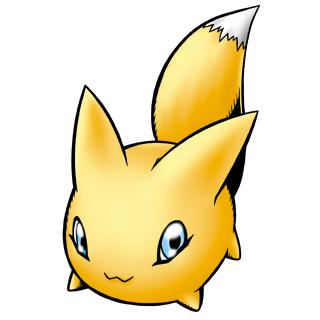

波可兽 ポコモン Pokomon

基本资料
| 等级 | 幼年期Ⅱ |
|---|---|
| 类型 | 小型 |
| 属性 | |
| 所属 | |
| 适应领域 | |
| 首次登场 | 2001年4月 数码方舟器 1.0 |
| 名字来源 | 日语【ポコポコ】上下活动的拟声词 |
必杀技＆得意技
| 杀生石 | Sesshouseki | 殺生石 |
设定资料
狐狐兽进化的夜行性幼年期数码兽。据说即使夜晚也只在月夜行动，其存在近乎于虚幻。因此在驯兽师中培育波可兽是一种身份的象征。根据培育方法会成长为非常有自信心的数码兽。不经常在众目睽睽下行动，跟外表相反，波可兽的速度很快，想捕捉他是非常困难的，但如果拿出他超爱吃的油炸豆腐，就会意想不到地现身。必杀技是变化为石头喷出毒气的「杀生石」。
レレモンが進化した、夜行性の幼年期デジモン。夜でも月夜の晩にしか行動しないことから、その存在は幻に近いと言われている。そのためテイマーの中ではポコモンを育てることが一種のステータスになっている。育て方によっては非常に心強いデジモンに成長する。常に人目に付かないように行動し、見た目に反してスピードも速くポコモンを捕えることは難しいが、大好物の油揚げを出されると思わず姿を現してしまう。必殺技は石に変化して毒のガスを噴出す『殺生石』。